Archives : 2009-01
混.沌 @ Jan 31, 2009
我不知道自己想要什么，但知道自己不要什么。--《情遇巴塞罗娜》台词
这句台词曾经听一个人说过，在N年前......我的记忆还不曾那么的衰退哦~
说实话，看完这部片子真有些混沌，虽能理解片中人物的感情方式，但离自己的生活实在太遥远，在现实生活中也不靠谱。现在终于理解某些艺术工作者最后为什么疯，或者为什么能那么不着边际。激情足够吸引人，但激情也可以令人自我毁灭，如果你曾经激情过疯狂过沉沦过毫无头绪过，如果你还能继续活着，那么还是应该庆幸的。直到现在，理智还无法让我们避免激情之中的折磨，爱情是一场战争。
做一个普通人 @ Jan 29, 2009
年前，min发给我有关热巧克力的PPS文件。过了好几天我才打开看，看完后感触很深，可能大多数人会在意杯子好不好看，而忽略了杯子里面的热巧克力，生活亦如此。二十几岁的时候我还是很虚荣的，注重形式，忽略了生活真正的意义......现在感悟到，还不算太晚。
从“农妇的自然生活”看到这段：真正的快乐，不是狂喜，亦不是苦痛，在我很主观的来说，它是细水长流，碧海无波，在芸芸众生里做一个普通的人，享受生命一刹间的喜悦，那么我们即使不死，也在天堂里了。
与此时的我产生强烈的共鸣，这正是我可以越来越“看淡外在”的主要原因。
相思.病 @ Jan 28, 2009
小区里有只母狗发情了，luke和这只浑身雪白的萨摩耶（暂叫“小白”）玩耍过几次，这段时期遇到更是让luke疯子一般追逐在小白左右，情不得已。
最深受其苦的是我。
之前都是我起床后luke才会从窝里坐起来，伸长脖子拉一拉筋骨，走出窝外伸个懒腰，抖一抖浑身的毛。现在只要天一亮，它就开始哼哼唧唧，等我下床它便把我往门口引，急着要出去。出去散步，东张西望的，魂不守舍。回来，继续哼哼唧唧，上午、下午例行睡觉也没有了，在房间里转悠，闹腾得人不能安宁。半夜，坐在阳台上往下张望，发呆。
动物会爱彼此吗？会对异性有感情存在吗？
对此，我仍然是悲观的。
与其说是相思病，不如说是被欲望折腾成这副死样儿。
欲望一旦解决了，终点又回到起点，周而复始。
象极了人类。
年年有今朝 @ Jan 28, 2009
全家人聚集在姐姐家吃的年夜饭，这是她做的部分菜肴。年龄越大越没有过年的感觉，过年就是意味着可以休息好多天，我都不知道自己为什么现在变得那么“宅”？哪儿也没兴趣，只想呆在家里做喜欢做的事情，当然这种喜欢并不是厌世的隐退。由此，舌头僵硬了，思维却依然活跃着，没日没夜......


这就是年夜饭的大厨--俺姐姐。她那天晚上吹了个很时髦的发型，满堂生辉啊！

年二十九的下午匆匆赶去剪发，头发实在太长了，本打算剪成短发，可换个了理发师，那副得瑟的摸样有点不靠谱，没有安全感，还是没剪。很想剪成短发哦，那么多年都是长发，期间尝试过一两次短发造型，皆以失败收尾。现在，我看到长发披肩的女子，总觉得很愚蠢，所以，每每看到镜子中自己的长发，也觉得愚蠢！
细细想想，漂亮的发型一般都不是自然的，要么病态到极致，枯草一把堆积在脑袋上，既随意又有造型；要么油黑发亮象缎子般闪烁着诱人的光芒，那种不是每天早晨要洗头就是要频繁的锔油；琼瑶剧中长发飘飘的女主角发型，也许要做个柔化加拉直，才会顺溜得一塌糊涂......我，被局限在这样的发型中感到悲观。
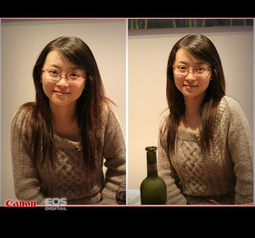
越来越喜欢喝葡萄酒~据说桌上的这瓶红酒已有8年光景了~
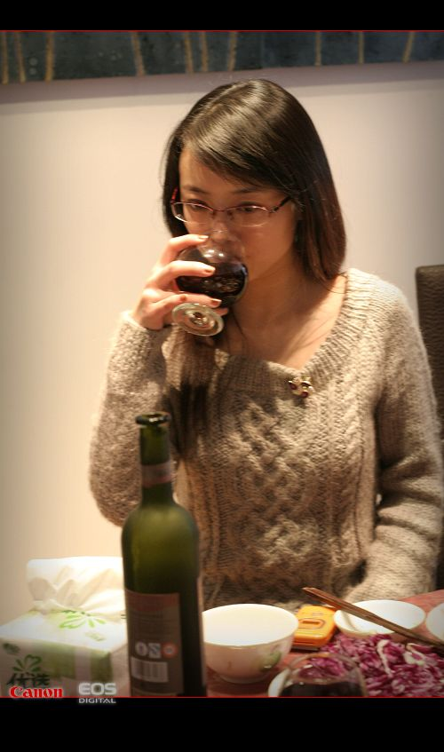
低温 @ Jan 23, 2009
今天好冷啊，从暖暖的温度一下子掉进冰窖里了。昨晚7点多钟开始起风，我在阳台上训练luke握手的动作，突然风忽忽地刮起来，树叶被风吹的往一边倒下去，luke不动了，楞楞地望着窗外好一会儿才恢复活跃。新闻说这次低温是南京18年以来最低的气温，还好再过一天就放假了......

painted heart @ Jan 23, 2009
昨天晚上终于看了《画皮》，一部妖精鬼怪的电影能拍到让人心里酸楚地仔细倾听片尾曲，一遍又一遍...说明这部电影是很成功的。一般晚上会避免看鬼片，在抽屉里挑来拣去最终还是决定看《画皮》吧。周迅不愧是我喜欢的演员，看完电影关上灯闭上眼睛，脑海里还浮现着她那双忽闪忽闪灵气的大眼睛，周迅这次的表演有很多小细节非常耐人琢磨也是很享受的事儿。陈凯歌导演拍《风月》时，周迅也曾去参加过试镜，她之前拍了一部戏叫《女儿红》，由谢晋导演的儿子谢炎拍的。那时候他们有一个剧照师，拍了一些黑白的剧照。凯歌导演找演员，就看到她的照片，然后叫她去试镜。”当时去试镜时，她念一句台词“女人比姑娘漂亮”就泪如雨下。可惜天不遂人愿，最后《风月》还是确定由巩俐来演女主角，周迅回忆道：“我挺难过的，但我也通过那件事悟到一个道理，是你的就是你的，你努力过了，不是你的，就一定要让它过去。
赵薇？！哦，好象自从《还珠格格》之后再没见过她什么好作品，她讲话的声音使她整个人的感染力大打折扣，在表演中还有语调语速的问题，不知道是否也有同样感受的观众？目前江苏某电视台正在播放她主演的《一个女人的史诗》，和另一个电视台邓超演的《人间情缘》同时在播，无法做到每天等在电视机前看连续剧，所以剧情如何对于我并不重要，而对于这两个演员的兴趣，使得我来回换台更换看他们的表演。邓超并没有令人失望，而赵薇的表演大部分时候有些飘，没有根基，浮动的。她的年龄，不，是她的内涵还达不到出演一个女人一生的角色！基于对她以前的印象，我还是会抱着希望期待她的演技日益成熟，她本人能越来越有文化和生活的底韵。
孙俪这次出场令人惊喜，没想到她把一个性格爽快的假小子演得活灵活现，她的出场令气氛立刻轻松活跃起来，但又不失女孩子的细腻和纯真。和周迅一样，她也有双会表情达意的大眼睛，瞧，孙俪除了本色表演之外还可以演绎本色之外的人物，给片中凝重纠缠的爱情戏吹过一缕清风！
卫西谛《我的画皮观，及其它。》中说《画皮》中不想当大奶的小三不是好小三，不够现代。现代男人可能都希望大奶和小三皆得，可“痴”的女人也是最最偏执的在爱情中，记得有个同事的签名是“love breaks your heart,but labels not.”能安心做小三，和别人共享爱恋的人的精神和肉体，还是爱情吗？爱情不是公共福利，就是自私的！我和卫西谛看到的不同之处是小三最终还是牺牲了自己，成全了所有人，不是吗？
《画皮》片尾曲：画心.MP3
张靓颖-画心
作词:陈少琪
作曲:藤原育郎
专辑:画皮电影原声主题曲
看不穿是你失落的魂魄
猜不透是你瞳孔的颜色
一阵风一场梦爱如生命般莫测
你的心到底被什么蛊惑
你的轮廓在黑夜之中淹没
看桃花开出怎样的结果
看着你抱着我目光似月色寂寞
就让你在别人怀里快乐
爱着你像心跳难触摸
画着你画不出你的骨骼
记着你的脸色是我等你的执着
你是我一首唱不完的歌
看不穿是你失落的魂魄
猜不透是你瞳孔的颜色
一阵风一场梦爱是生命的莫测
你的心到底被什么蛊惑
你的轮廓在黑夜之中淹没
看桃花开出怎样的结果
看着你抱着我目光比月色寂寞
就让你在别人怀里快乐
爱着你像心跳难触摸
画着你画不出你的骨骼
记着你的脸色是我等你的执着
你是我一首唱不完的歌
YY一下 @ Jan 20, 2009
下午有个牛人在线上问：如果你得了1千万的彩票，会干吗？
我说：存起来吃利息。
对方给了一句“没志气”。
我问线上的加蓬人民，人家说：开花店。
金融危机的寒冬，社交何需盛装出行，只需要一个MSN，大家都来YY一下吧~
中铝减薪保职位 @ Jan 20, 2009
英国《金融时报》杰夫·代尔(Geoff Dyer)北京报道 2009-01-20
中国最大的铝生产商昨日表示，今年将把员工薪水削减至少15%，高管薪水最多将削减50%，以便在需求持续下滑之际保留工作岗位。
在中央政府要求避免大量失业的强大压力下，中国数家国有企业已表示将减薪而不裁员，中国铝业公司(Chinalco)就是其中之一。该公司去年盈利出现下滑。
中铝副总经理吕友清表示，减薪将使集团今年的成本减少20亿元人民币。公司高管职位越高，减薪幅度将越大。
该公司的策略与业内数家国际大公司形成对比，那些公司宣布，由于经济低迷，将进行大规模裁员。
美国铝业(Alcoa)本月表示，将削减13500个职位，约占其员工总数的13%。此前该公司已将今年计划产量削减约18%。力拓(Rio Tinto)去年12月表示，将裁减14000个职位，占其员工总数的13%。
北京正日益担心，出口工厂的数百万人失业，可能引发社会不稳定。政府一直在向国有企业大力施压，要求稳定就业。
国务院总理温家宝去年12月告诉国有企业，要“千方百计”稳定就业。
国资委主任李荣融表示，“企业和社会稳定问题”必须放到更加突出的位置。
中国东方航空公司(China Eastern Airlines)董事罗祝平表示，东航中高层管理人员的薪水将削减10-30%。
中国媒体报道，宝钢(Baosteel)和武钢(Wuhan Steel)也将减薪，但两家公司不愿证实这一消息。与政府关系密切的中国官方授权工会——中华全国总工会(Acftu)拒绝就企业减薪置评。不过，国有企业高管减薪的消息，在中国已招致怀疑。
译者/何黎
冬日.暖阳 @ Jan 20, 2009
去年买了两盆仙客来，一盆红色的花，一盆玫红色的，后者送给要好的同事了。有段时间她的玫红色花一直持续地盛开着，而我这盆却只长绿叶，后来才知道是自己浇水浇地太勤。我还真是那种爱它就要给它很多很多爱的人，其实爱也应该有“度”，不然伤了它也伤了自己的心。瞧，最冷的三九天，这盆仙客来长得多好，多灿烂啊~
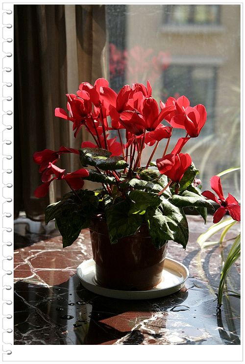
冬天也爱穿裙子，裙子占衣橱的空间比裤子占的空间大。尤其喜欢简洁款式的，这条裙子上那一抹蓝色真讨人喜欢。这两天心情莫名得好，看谁都顺眼，也许快放假了吧？
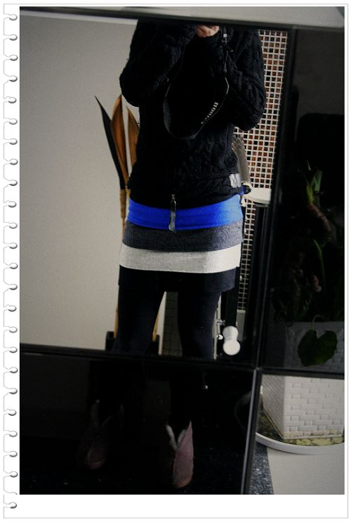
满足.不满足 @ Jan 19, 2009
办公室的地上放着几个箱子，里面全是崭新的毛裤、手套、内衣等用品。以为是公司准备发给大家的福利，有个同事调侃地说：“我想要一些，给质检员，他们很辛苦......”
后来才知道一个同事和家人买了好些冬季用的衣物，准备捐献给四川灾区。顺风快递员打包了整整6箱，他说地震刚发生那段时间，他们公司会免费运送救灾物资，都是平民百姓自发行为，每天会装满两个集装箱卡车开往四川。
我就是那只井底的蛙，觉得公司挺富裕的，奇怪的是拿钱相对少的人整天喊钱拿的少，拿钱多的人也在喊钱拿的少，果真会哭的孩子有奶吃吗？未必。如果不能改变现状，不如闭嘴为妙，周围的呐喊会让人感觉这世界充满了不公平与不公正。我觉得能维持现在的生活水平就很满足，想想那些灾区的同胞，还有什么不满足的呢？至少我们能在这世界上过个温暖的春节！默默地看着快递员打包，心里既触动又惭愧......大年三十又要降温了，据说要下降12度左右。希望这6只箱子能尽快到达四川的绵竹。
轻松度周末 @ Jan 19, 2009
周末想吃康记的大碗面，尤其喜欢这家的三鲜皮肚面。小小的店面，开了好多年，每天估计能卖出去几百碗，这碗面加了一个鸡蛋，12元。每次去客人都很多，只是国内的面馆经营意识落后，店面形象邋遢，如果能象“味千拉面”一样树立好形象，多开些连锁不是问题。想起新街口的“芳婆”，卖些肉粽子、茶叶蛋、赤豆元宵之类的食品，口味不错，客人也多，也是形象差。
记得有一次去吃面，一个胳膊上满是刺青、头发板寸的中年男人坐在帐台后面问：“想吃什么？”
我一本正经地说：“有什么？”
“你想要什么，都有。”
“月亮有吗？”
“有啊，马上给你捞。”

还有一周就要过年了，把车送去清洗内饰，米色的车顶上一层灰。出乎意料的是店家真的把车顶的灰尘清理掉了，而且象新的一样。在院子里遇到这辆STI，低调的外型，超猛的动力，是不是这就是所谓的“扮猪吃老虎”？让停在它旁边的Audi、Honda黯然失色，这款车百万以内无敌，这代EVO也比不过。

上周收到横戈寄来的2009年首刊的 《城客》，香港也同步发行了。横戈的创刊词这样写的：两年前，我说想做一本杂志，引来无数的人跟我PK，劝我不要去做杂志。而今天，这本叫做《城客》的杂志，终于创刊了。
劝我不要做杂志的，要么是好朋友，要么就是“业内人士”，大都说杂志是烧钱的东西，平面媒体一天不如一天，我守着“新媒体”却要蹚“旧媒体”的浑水，实在不是明智之选；还有的稍稍积极一点说，杂志要想赚钱，至少得熬个三、四年，前两年就别想赚钱的事儿，劝我把期望值放低点，说到底做杂志是个吃力不讨好的差事。
可我知道的是，中国，甚至全世界，真正“好”的杂志并不多……更多内容
一个免费的blog网站公司，创办杂志，是“肥水不流外人田”。整个网站上有那么多优秀的写手，摄影师和潮人，有许许多多生活在世界各地的bloggers，我在blogbus上就有两个喜欢阅读的女性blog，一个在纽约，一个在英国......忽然想到一首歌的歌词“在很久很久以前，你离开我去远空翱翔。外面的世界很精彩，外面的世界很无奈，当你觉得外面的世界很精彩，我会在这里衷心的祝福你......”blogbus将可利用资源集中起来展示，让人足不出户就能领略到他乡城市的点点滴滴，省去网虫们的查找、搜索，捧着《城客》就好象乘坐大巴士环球旅行一样有趣~

虽然今年定购了三本杂志，但还是想买些时尚的杂志回家解谗。卖杂志的是个中学生摸样的小女孩，手脚生疏，讲了几遍才有反应，态度倒是随和的，一抬头亭子里面还有两个学生妹一同在帮忙，现在是寒假时间，小小年纪就开始帮大人分担生活压力了。家庭经济稍微宽裕的，估计这时候都在各个补习班啃书本呢~做孩子也不快乐，长大了能快乐吗？

老天啊，超小台扫描仪！不但网拍将面临3D革命，连开箱文都不需要再上下左右四面各来一张啦！

等一等香锅 @ Jan 14, 2009
上一周每天晚饭后都会看一部电影，渐渐又开始逛大街啦，喜欢上“等一等香锅”的麻、辣、香，虽然也只是吃了一次而已，想到那种口味就想流口水。这家店做生意很聪明，不是按一大碗多少钱计价，而是客人在店家展示的生菜里挑选自己想吃的内容，按重量称，我和nana吃的这碗要79元，因为我爱吃肉，点的荤菜比较多，最后两个人还是没有吃完，好可惜啊！
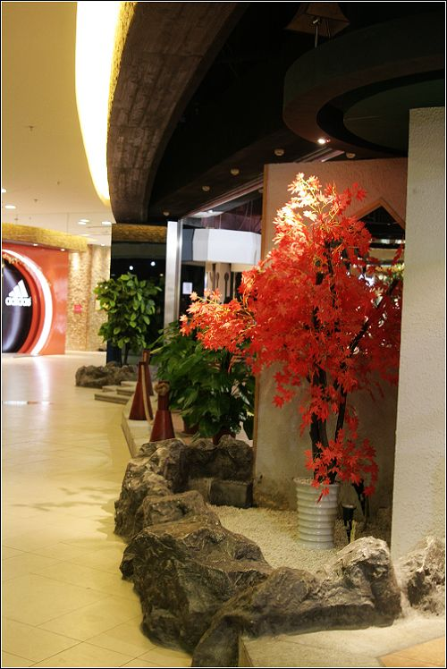


散步 @ Jan 14, 2009
晚饭后带着luke去散步，在这么寒冷的天气里居然步行了2公里之多，耳朵冷，面颊也冷，后来没知觉了，怀疑是不是上冻了？因为耳朵冷，边走边摘掉耳环，以免金属碰到皮肤上冰冰亮、透心凉。大冬天散步也有好处，可以预防感冒，脚下面越来越暖和，我刻意前后甩开胳膊大步流星地往前走，只是luke见了草地就没命似的要往里钻，牵着他等于拎了30斤肉在走路$#%$^&...
散步仿佛散去了所有阴霾，十点半左右回到家放了一缸热水，舒舒服服的泡了个热水澡，贴了个面膜，又贴了个眼膜，细细涂上眼霜、护肤霜和手霜，倒头呼呼大睡。


大月亮 @ Jan 14, 2009
1月10日晚，月亮比平时“大”16%，月亮看起来又大又圆又亮。据说，这是12年里月亮离地球最近的一天。当天晚上天气非常寒冷，穿上羽绒服和雪地靴开车到山顶看月亮。

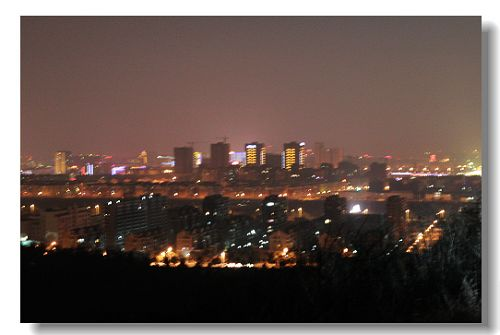
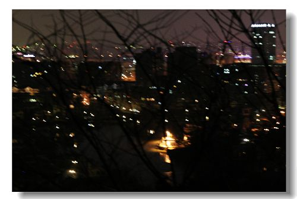
昨晚下雪了 @ Jan 06, 2009
早晨醒来听见外面滴滴嗒嗒的下雨声，听说今天会下大雪哦，心里替luke美滋滋的，憧憬着它冲进雪地，在一尺厚的积雪里跳跃的情景。结果只有屋顶、数枝和汽车上铺了一层薄薄的雪，地上是湿的。真羡慕luke，这个天气在家睡觉最舒服了。
前挡玻璃上的积雪，令人小兴奋：）
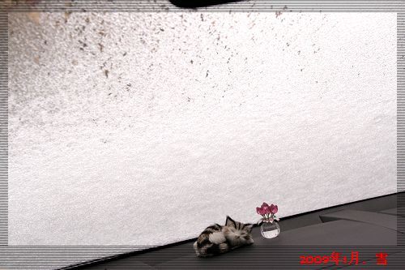
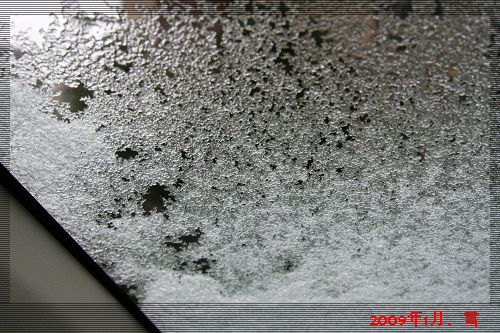
同事从后面偷拍滴~
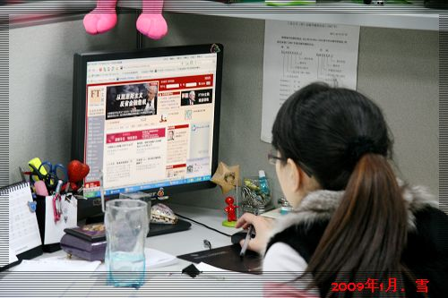
*_*雪地靴，好暖和。
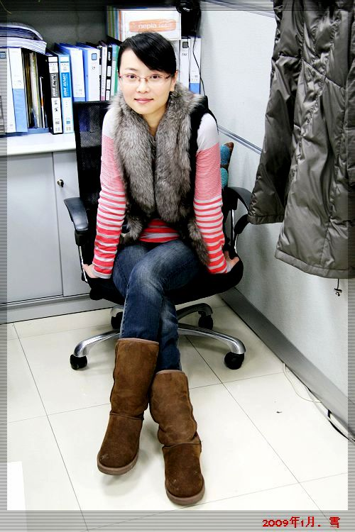
Luke睡觉的死样儿~ @ Jan 06, 2009
啥叫睡觉的“死样儿”？瞧瞧Luke就知道了，呵呵~
每次我坐在沙发上看电视或看电影，它都会爬上沙发，先是舒服的在沙发上翻几个身，然后靠着我呼呼大睡。可是最让人无法忍受的是在它睡醒后，会抖一抖全身的毛，哇~那时侯恨不能把它踢出门去！


来张凶狠的小白牙~

工作快乐的新秘诀 @ Jan 04, 2009
常听到有人抱怨对公司的不满，这些人如今收入丰厚，在公司获得一小块发展空间，抱怨渐渐多起来，大致是干地多拿得少，即使每年已经位居公司的高收入行列。当我们抱怨的时候不要忘了饮水思源的含义！没见过离开公司的哪个人离开前整天嚷嚷的。公司喂不饱了，何需抱怨？只需一走了之，今后挣的每一分钱都是自己的，就不会抱怨了。成熟的职业人懂得一个道理：不给管理层出难题。
金融危机让大家的期望值都降低了，这对于牛势了十多年的中国职场，未必是坏事。泡沫散去，大家都可以冷静下来看清自己的处境和位置。这个市场的供需如何？自己的叫价究竟是高了还是低了？但这对于大部分人来说是道太难的题，因为通常人们不是对自己评估过高，就是把别人评估得过低。
偏巧看到英国《金融时报》专栏作家露西•凯拉韦(Lucy Kellaway) 写的一篇《Money, not meaning, is the new secret of happy work》，转载部分如下，以共勉：
在过去的十年里，富有的专业人士阶层对待工作形成了一种日益病态的态度。我们将工作和丰厚的薪水视为理所当然，如果奖金没有比前一年更多，我们还会愤愤不平。我们要求工作本身要有意思，更加危险和荒谬的是，我们还要求工作应该有意义。
所有这些要求导致的结果，当然就是不满。我们已经登上了管理学者马斯洛(Maslow)需求层次的最顶端，却发现金字塔顶的空气果真非常稀薄。作为一位知心大姐，我发现迄今为止，读者提问中最常见的问题，来自于富有的资深专业人士。他们的基本需求早已得到满足，因此备受煎熬的是他们的心灵。他们哭喊着：帮帮我，我很空虚。或者更糟：我的工作有什么意义？
在过去的几个月里，这类痛苦的抱怨已销声匿迹。当一个人的工作朝不保夕，而储蓄又日渐缩水时，寻找工作的意义本身就变得毫无意义了。工作的目的也变得更为简单：为自己和家人提供食物与住房（必要时支付教育费用）。如果我们能够做到这一点，那么除此之外我们获得的任何盈余都可视为一笔外财。一旦我们的期望值完全适应了这种新的现实、一旦我们将赚钱视作工作的主要动机，更强烈的满足感就会随之而来。
关于降低期望值可是有很多说法的。调查显示，女人在工作时其实比男人更加满足，尽管在工作量相同的情况下，女人收入更低，并且还要承担大部分家务活。原因很简单：女人对职业生活的期望值更低。同样，尽管气候寒冷阴霾、最高税率达68%，丹麦仍是全球最幸福的国家。坚忍克己的丹麦人对生活没有那么多奢求，而是清心寡欲、敝帚自珍。
假期结束。 @ Jan 03, 2009
哈，明天又要上班了。
元旦假期，一天给家人，一天给朋友，一天给自己，过得轻松而充实。
自己这一天，睡到中午起床，烧饭吃饭，然后看电影到天黑。受到前一天下馆子吃涮羊肉的启发，晚上在家里涮羊肉，清水里放了西红柿、枸杞、姜葱和红枣，吃完后满屋子都是羊膳味。如果每天都能这么放松的度过也不错，可是，还是要上班，要工作的，没有财务自由就没有自由。假期买了个Channel眼影，两双新鞋子，5双各色连裤袜......之前和sherry讨论到袜子，她说厚木有双袜子要450元，还有更贵的哦，一双酒红色夹银线的连裤袜居然卖998元，晕死！。鞋子好象也比去年贵出200~300元，不过设计越来越时尚，在杂志上看到的鞋子有些在大商场里也能买到。想到上班的时候能用上新买的东西就感到快乐，时间不早了，洗洗睡吧。